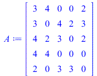
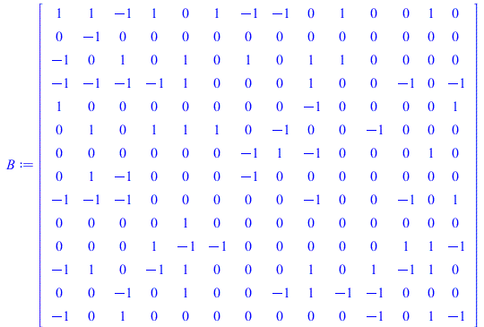
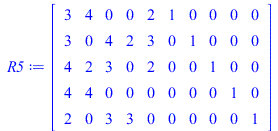
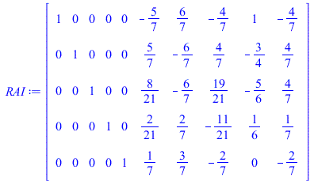
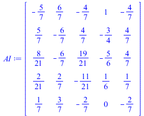
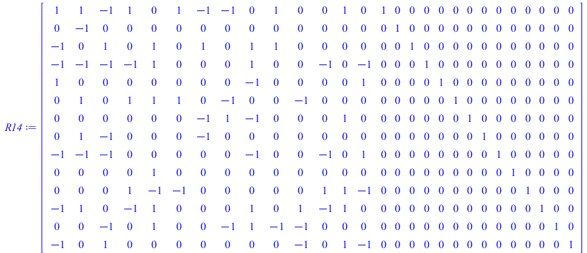
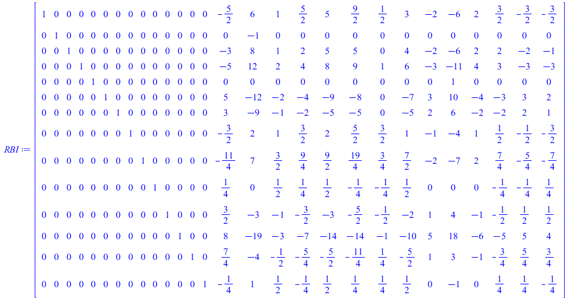
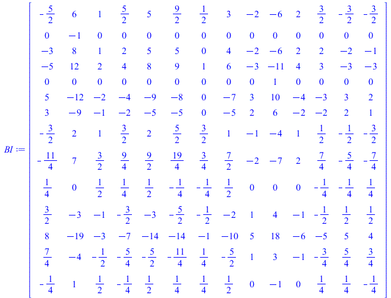
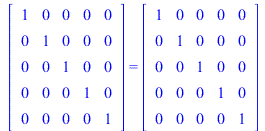
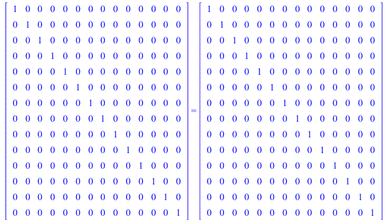

| > | with(LinearAlgebra):
interface(rtablesize=infinity): #Here we load a few extra tools to be able to generate and work with matrics. |
| > | A := RandomMatrix(5,5,density = 0.75,generator=2..4);
B := RandomMatrix(14,14,density = 0.5,generator=-1..1); I5 := IdentityMatrix(5): I14 := IdentityMatrix(14): #Here we generate a random 5x5 matrix A, a random 14x14 matrix B and label the corresponding identity matrices I5 and I14. |
|  | |
|  | (1) |
| > | R5 := <A|I5>;
RAI := ReducedRowEchelonForm(R5); AI := MatrixInverse(A); #Here we set-up and row reduce the matrix A augmented with the 5x5 identity matrix. We then compute the matrix inverse of A using the built in calculator. #Notice the right-hand side of the reduced echelon form is indeed the matrix Maple outputs as the inverse of A. |
|  | |
|  | |
|  | (2) |
| > | R14 := <B|I14>;
RBI := ReducedRowEchelonForm(R14); BI := MatrixInverse(B); #Here we do the same thing for B! We set-up B to have relatively few values which are simple to ease the calculation. |
|  | |
|  | |
|  | (3) |
| > | A.AI = AI.A;
B.BI = BI.B; #And quickly, we just verify that our calcuations are all correct and the matrices AI and BI are indeed the inverses of A and B. |
|  | |
|  | (4) |
| > |